Electrical items from Japan
While standard Japanese plugs and sockets are more or less the same as the NEMA ones in use in North America, there are still substantial differences, both in their power sockets and with other electrical items as well: for example, most power sockets in use there don't feature an earth connection.
It should be noted that Japan uses 100V supplies (with 200V split-phase, similar to US supplies, being common), at either 50 or 60 Hz depending on the geographical location (a fairly unique feature). Whole-house RCDs seem to be fairly common, possibly due to the earthing system in use (though it's hard to find confirmation on this from English sources).
Panasonic socket modules
One distinguishing feature of Japanese electrics compared to North American ones is the fairly extensive use of
modular sockets and lightswitches, which allows for quite a lot of flexibility.
These are some of the modules that would be used in such a system: they would mount to a mounting frame, and a
coper plate would go on top.
Notably, compared to modular items in use in Italy, this seems to be some sort of standard, which means devices
from various brands should work together without problems.
Quite a lot of these modules are twist-lock ones: these are quite interesting, and work with standard types of plugs, keeping them locked in place by using the holes present on their prongs. Notably, at least with these specific sockets, it's possible to insert a polarised plug in either direction. Most of the twist-lock sockets shown here are 3-prong, but there is also a 2-prong one present.
Wiring is done on the back, though, uniquely, the wire connections are done with screwless terminals - these work simply by pushing the wire in (solid-core only), and holds it firmly in place; to remove it, a screwdriver is used to push a small piece on top of the terminals.
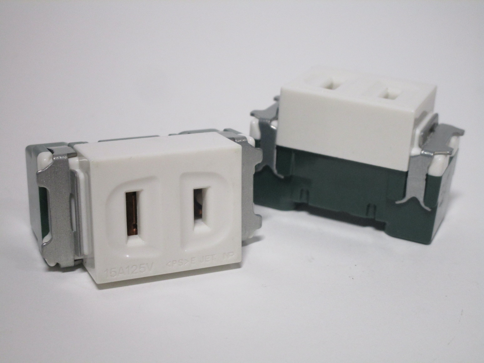 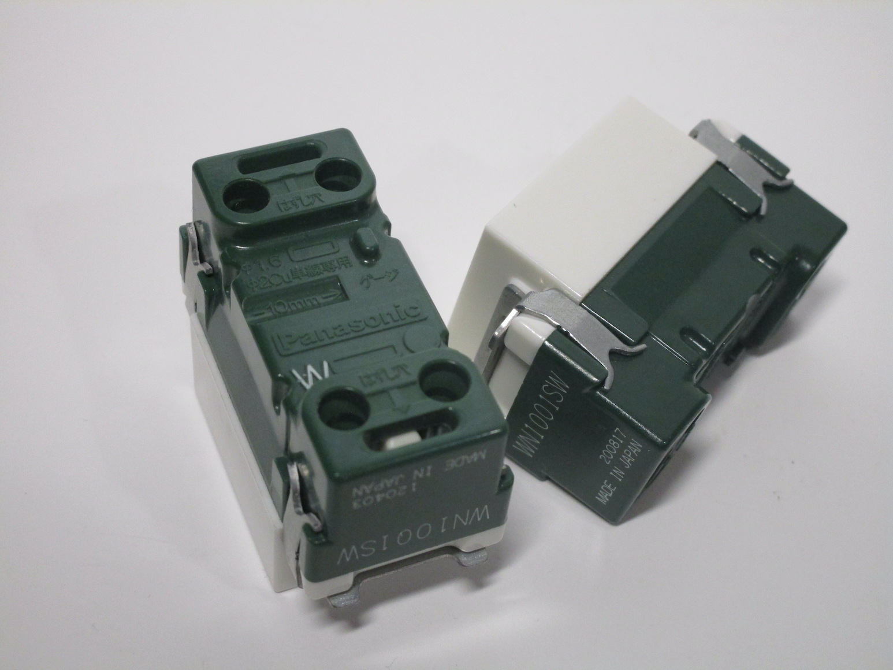 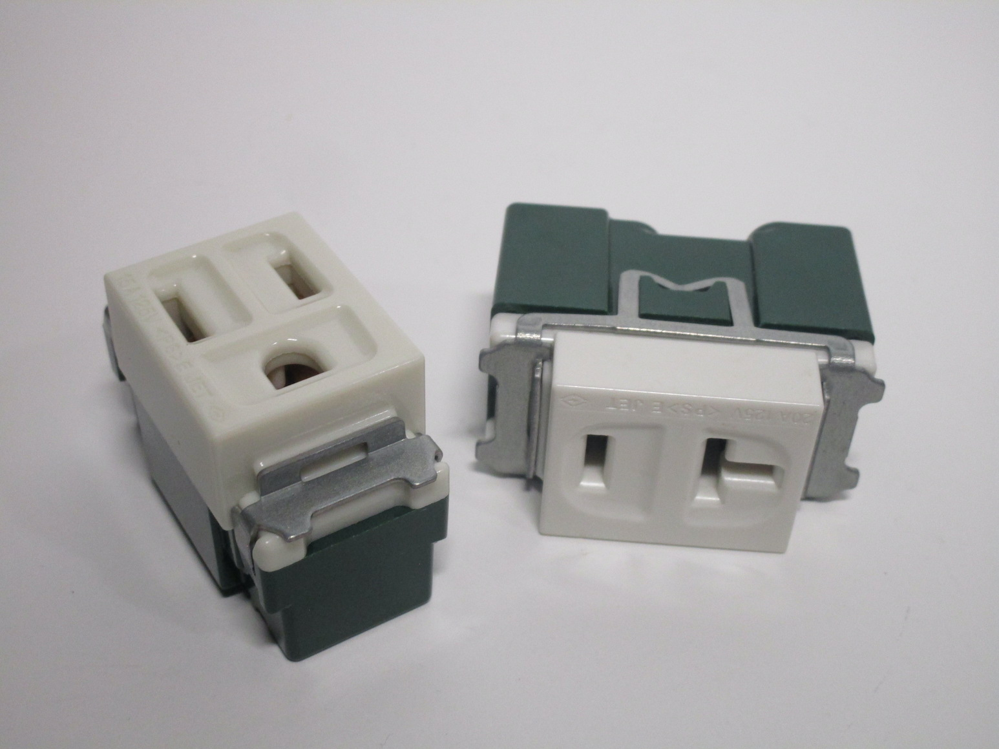{kind=link}
{kind=link}
{kind=link}
RCD power socket
This is a rainproof RCD-protected power socket, from Panasonic. It's meant to mount to a wall, with a rubber gasket on the outside to prevent any water from entering, and has power sockets on the bottom to connect to appliances, and controls for the RCD on the front, under a plastic flap.
The controls on the front are quite simple: as with most RCDs, there's a small test button, and a larger reset button in case the device has tripped. There is also an indicator LED to view the status of the device. Notably, this RCD trips at 15mA - twice as sensitive as the 30mA ones in use in Europe, but not as much as the GFCIs in use in North America.
Interestingly enough, while this device is marked as being rain-proof, it only has the aforementioned rubber gasket on the back, but nothing on the front flap for the controls, and there isn't a cover for the sockets on the bottom either.
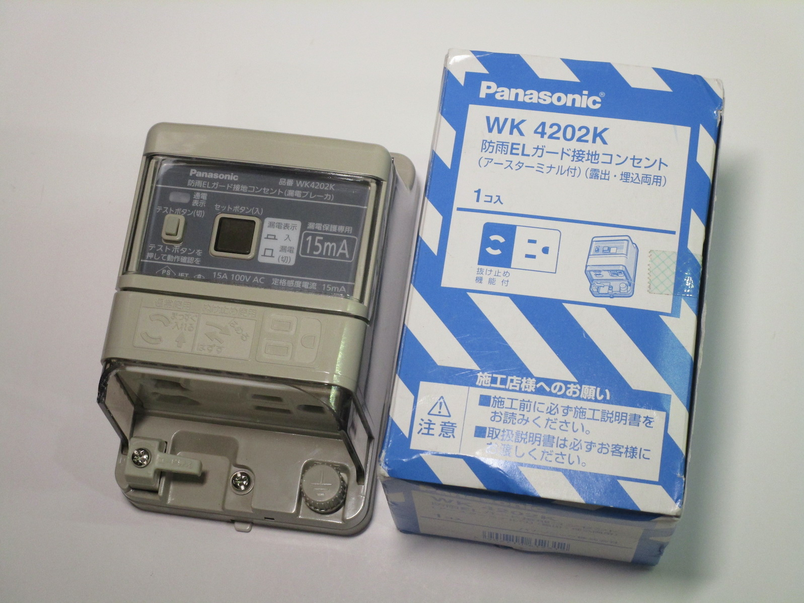 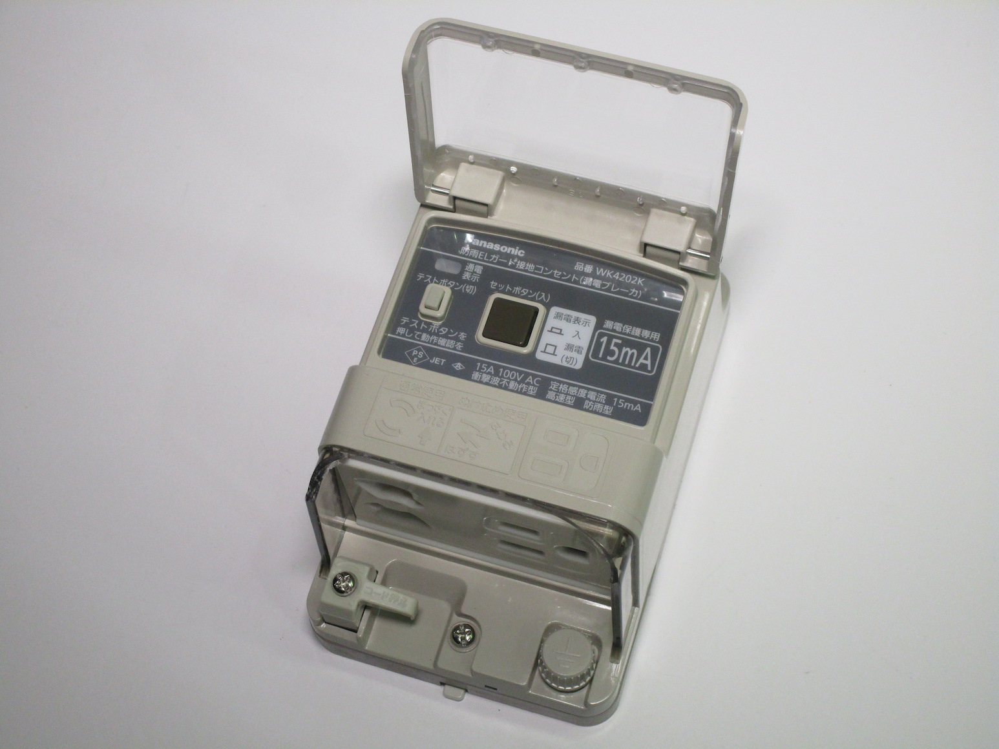 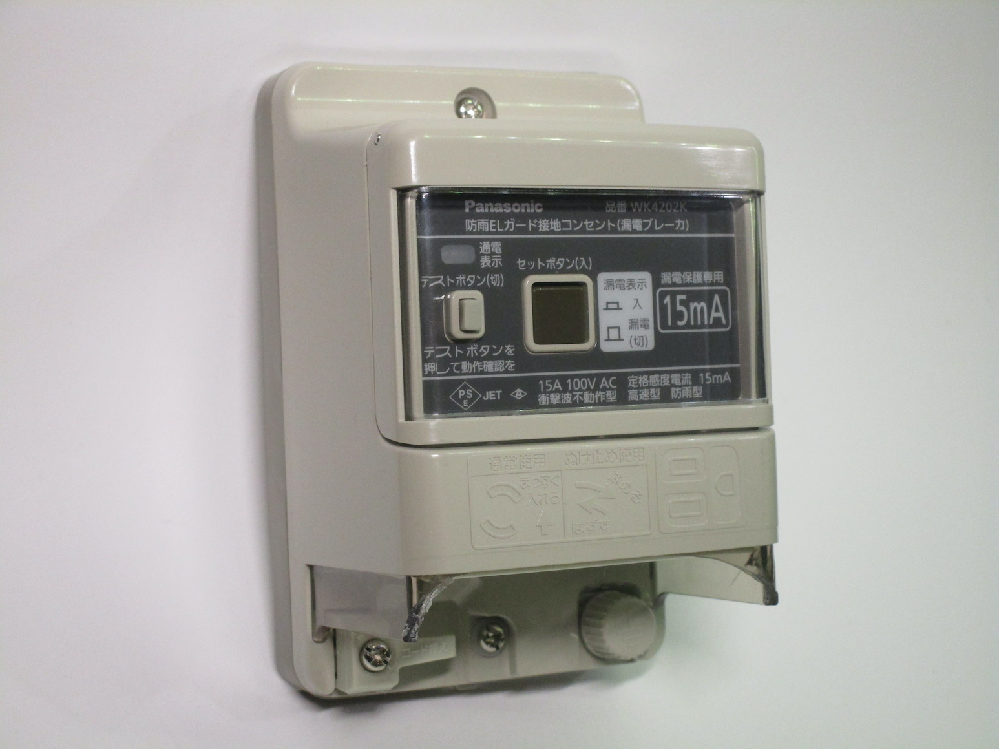{kind=link}
{kind=link}
{kind=link}
Two power sockets are present on the bottom: a standard 3-prong one, the same as the style used in the US, as well as a 2-prong twist-lock one. An earthing post is also present, as it's quite common for Japanese appliances to use a 2-prong plug with a separate earth lead; there's also a small plastic cord grip present, to prevent a device from becoming unplugged. The twist-lock socket works similarly to the ones in the socket modules shown earlier: it works with standard plugs and locks them in place by using the holes on the pins of the plug.
Interestingly, both of the sockets on this device feature some sort of safety shutter mechanism; however, compared to normal styles of shutters, these ones allow the user to stick an object inside the socket, and thus aren't particularly effective or a useful form of protection.
Wiring is, as usual, done on the back; terminals for line, neutral (W), and earth are present, as well as two terminals (covered up by a label) which seem to be for some sort of alarm device - perhaps to indicate when the RCD has tripped. As with the modules shown earlier, this device also uses screwless terminal connections.
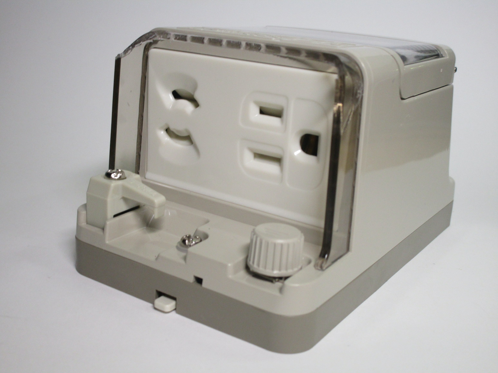 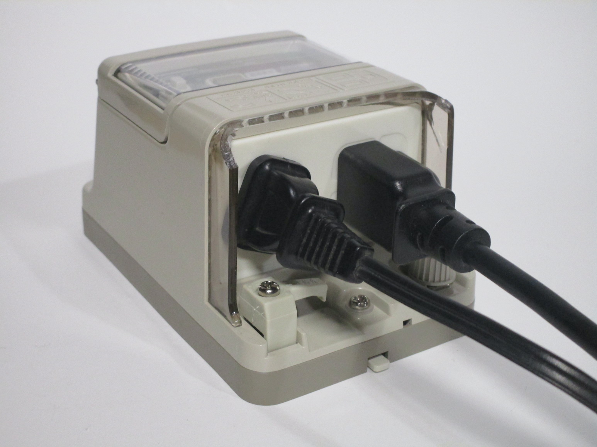 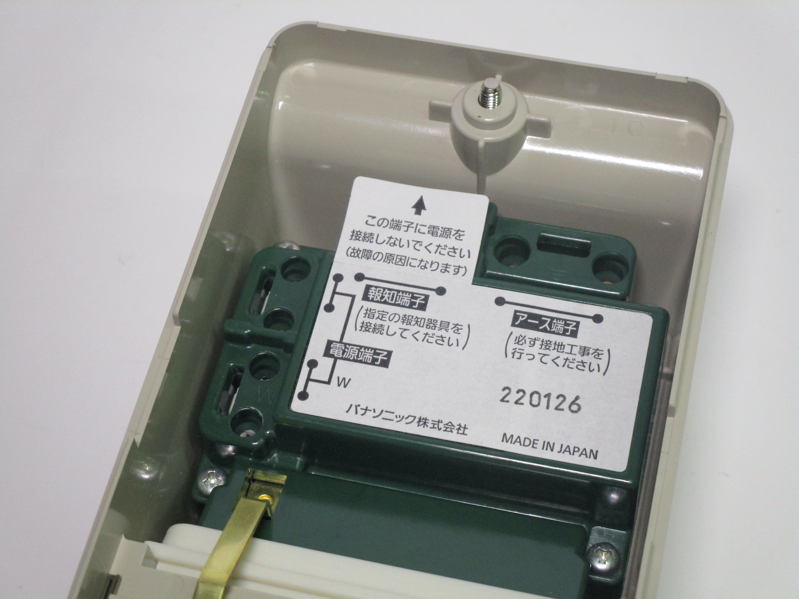{kind=link}
{kind=link}
{kind=link}
Earthed Japanese plug
Rating: 15A 125V
This is an earthed (3-prong) plug from Japan, branded as National and made by Matsushita Electric Works Ltd., in Japan. It's the same type of plug as the American NEMA 5-15P plug, though plugs like these aren't always used in Japan to connect earthed devices; sometimes, 2-prong plugs with a separate earth lead are used, with some more modern sockets (like the RCD one shown earlier) being able to use either type.
One notable feature of this plug is the gold-coloured live pin, presumably to avoid people from miswiring it. The neutral and earth pins are both coloured silver, though the screw for the earth connection is coloured green.
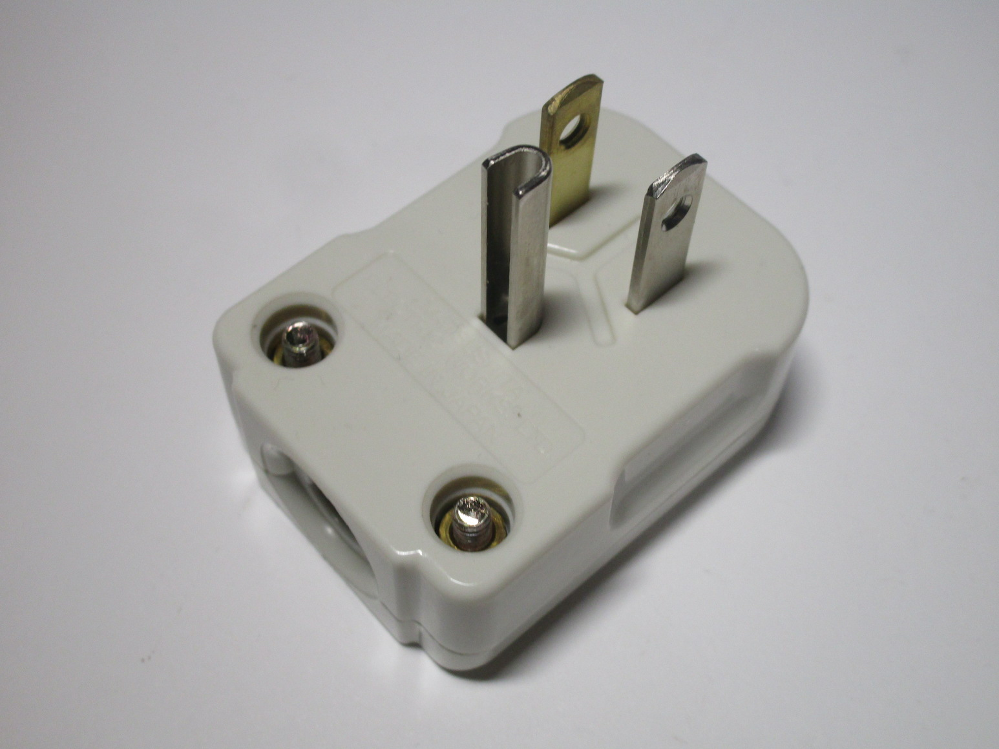 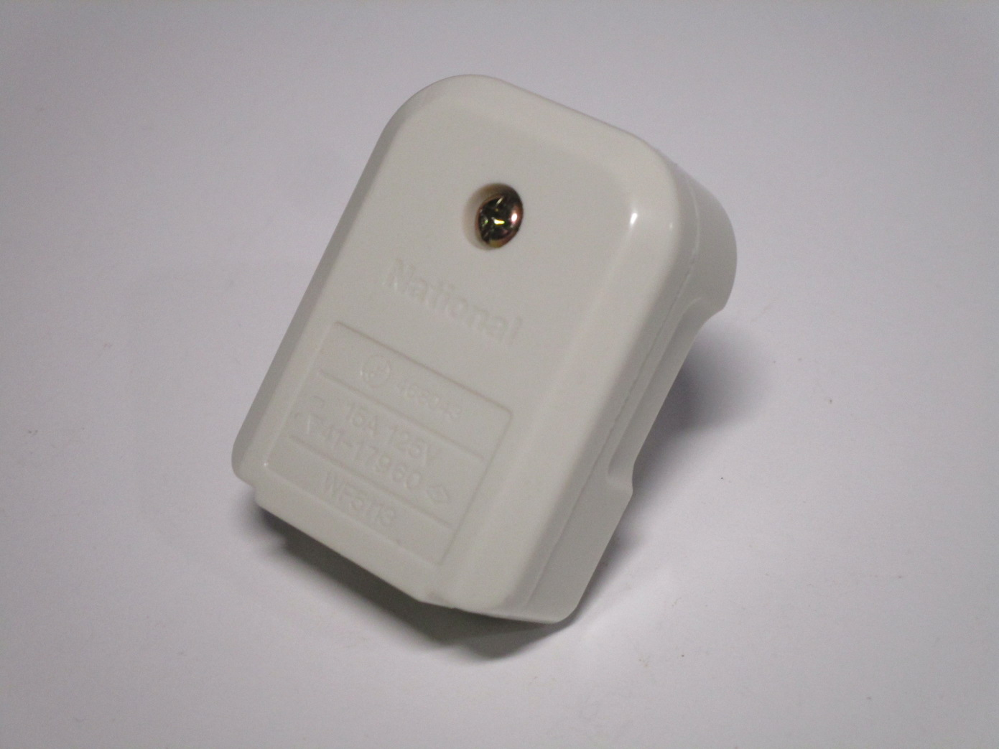{kind=link}
{kind=link}